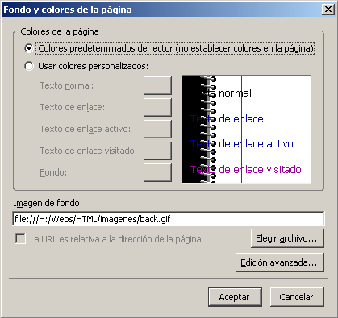
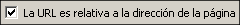

La base>>Imágenes de fondo

Además de los colores seguro que has visto alguna página que tiene una textura como fondo. Aunque últimamente está empezando a caer en desuso puede ser un recurso interesante para la construcción estética de nuestro sitio WEB.
Lo que hacemos cuando elegimos una imagen para colocarla como fondo de nuestra página es considerar la pantalla como el suelo de una habitación que iremos rellenando desde la esquina superior izquierda con baldosas. Las baldosas serán tan grandes o pequeñas como la imagen que hayamos elegido.
Para elegir la imagen que deseamos
utilizar como fondo de la página accederemos al panel que ya
conocemos mediante la opción de menú  .
.
Si la imagen se encuentra fuera de la carpeta en la que estamos trabajando podemos tener un problema cuando se publique la página, por lo que se recomienda que, antes de insertar una imagen, sea como fondo o como componente de la página, se copie a la carpeta de trabajo o a una subcarpeta que cuelgue de ella.
Si la imagen que deseamos poner de fondo se encuentra en la carpeta o en una subcarpeta de la misma, será muy conveniente marcar  para que la referencia no sea la ruta absoluta hasta ella, sino su ruta relativa
Si la página a la que le estamos aplicando el fondo
no ha
sido guardada todavía verás que no se activa la
casilla
para indicar que la URL es relativa a la página, ya que al
no
conocer aún cuál será la
ubicación de la
misma es imposible establecer rutas relativas hacia ella.
Para hacer la siguiente práctica puedes utilizar alguna de las imágenes que encontrarás en la carpeta imagenes (sin tilde para garantizar la compatibilidad). También puedes recurrir a cualquiera de la multitud de páginas en la red que ofrecen la posibilidad de obtener este tipo de imágenes. Tendremos que "bajarlas" a nuestro ordenador, para lo que pulsaremos con el botón derecho del ratón sobre la imagen que queramos conseguir, y copiarlas en el directorio de trabajo para poder incluirlas en nuestra página. (Aunque se podrían guardar en cualquier directorio resulta más cómodo hacerlo en el directorio en el que estamos trabajando nuestras páginas, para no tener que irlas buscando por todo el disco duro y, además, permitir la creación de rutas relativas que funcionen posteriormente). Puedes probar a bajar alguna imagen para el próximo ejercicio desde ColorVivo

 para localizar la etiqueta
para localizar la etiqueta <body>
y comprobar que el atributo de imagen de fondo de la
página tiene por ahora la referencia a la imagen
en forma
de ruta absoluta.  y
recurre nuevamente a para
marcar la
casilla para
indicar que la URL de la imagen está
relacionada con la dirección de la página.
que ha desaparecido la ruta absoluta.
y
recurre nuevamente a para
marcar la
casilla para
indicar que la URL de la imagen está
relacionada con la dirección de la página.
que ha desaparecido la ruta absoluta. Si la
imagen se encuentra en una unidad diferente a la que alberga la
página no tendrás posibilidad de indicar que se
trata de una ruta relativa
y desactívala (o
viceversa). Si eliminas
la imagen de fondo y vuelves luego a incluirla podrás
comprobar que la forma de materializar el código es
diferente, aunque el efecto es el mismo.
Si la
imagen se encuentra en una unidad diferente a la que alberga la
página no tendrás posibilidad de indicar que se
trata de una ruta relativa
y desactívala (o
viceversa). Si eliminas
la imagen de fondo y vuelves luego a incluirla podrás
comprobar que la forma de materializar el código es
diferente, aunque el efecto es el mismo.